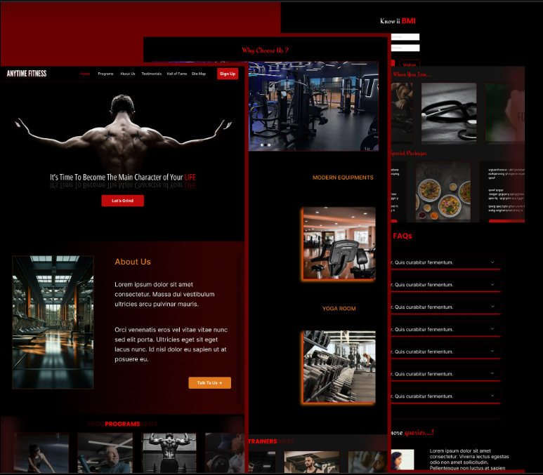

AADITH ABHIMANYU S
UI UX Design & Front End Developer
Welcome To My Portfolio!
See My UI UX Design Works
Professional Gym Landing Page

Medical Appointmet App
I am OPEN to WORK
Feel free to reach out to me for projects:
Click here